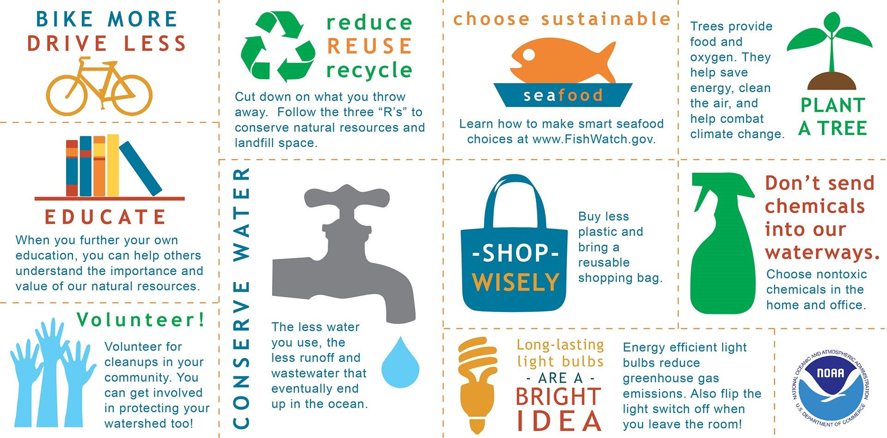
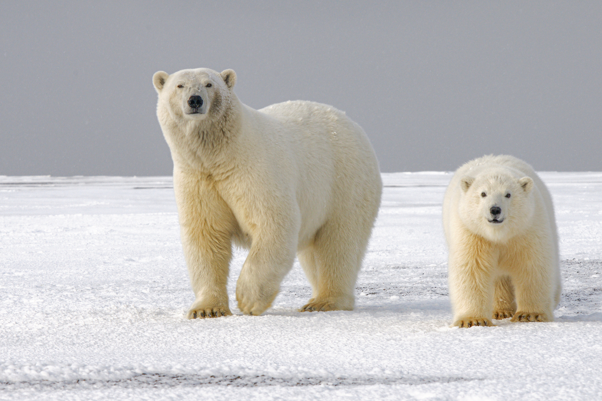
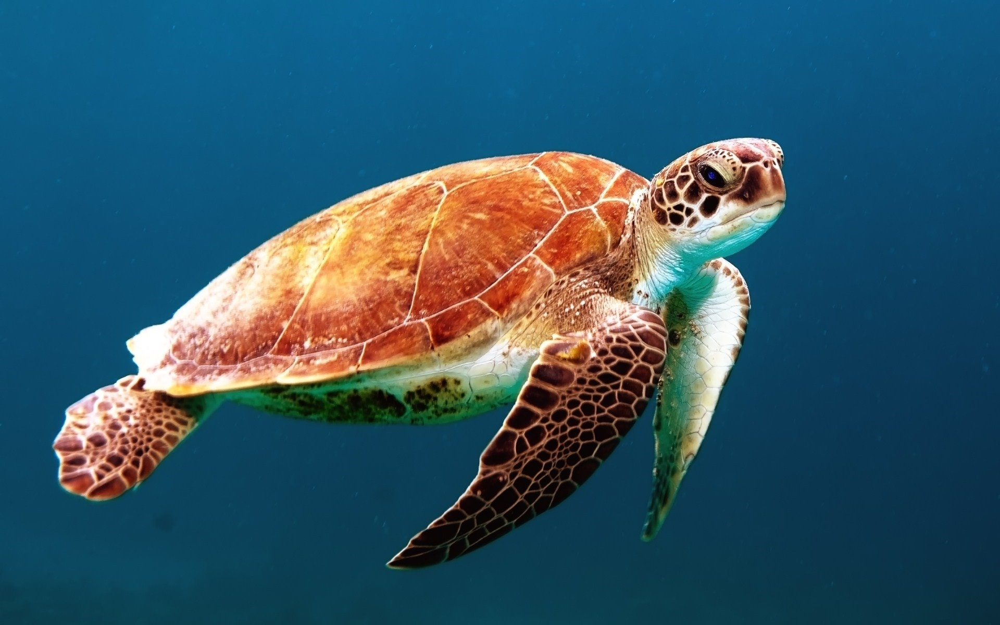
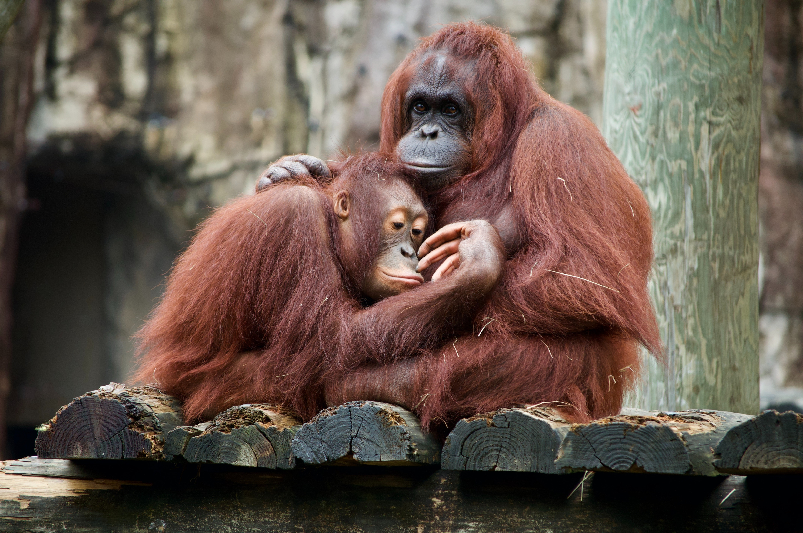
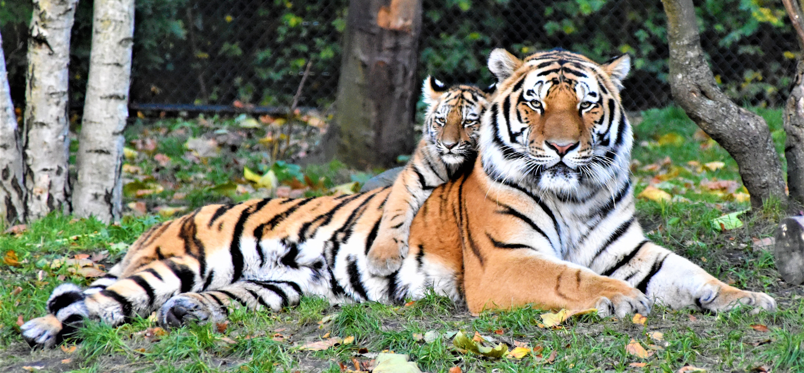

Пожертвуйте тут
Чим ми можемо допомогти?

Які тварини вимирають

ПОЛЯРНІ ВЕДМЕДІ
Більшість білих ведмедів живуть на морському льоду в Арктиці та навіть при невеликому підвищенні глобальної температури може мати значний вплив на середовище їх проживання. З кожним роком стає все менше льоду, полярний Зараз ведмеді є одним із найбільш вразливих видів на планеті. Polar Bears International і інший провідні організації працюють над збереженням білих ведмедів, захищаючи льоди в Арктиці та проведення важливих досліджень на тваринах. Організація також проінформувала громадськість в Таким чином, зменшення наших викидів допоможе зменшити швидкість втрати льоду та зберегти білого ведмедя середовища існування на роки вперед. За допомогою наших венчурних браслетів Fahlo намагається допомогти. Відсоток від кожного покупка йде на збереження та дослідження тварин.

МОРСЬКІ ЧЕРЕПАХИ
Морські черепахи є ще одним вразливим видом, який стикається з кількома проблемами через людину втручання в їхнє природне середовище. Ці черепахи часто потрапляють випадково в сітки та інші важка рука методи риболовлі, які не розрізняють різних морських тварин. Морська черепаха населення знаходяться під загрозою прямого браконьєрства та полювання на різноманітні ресурси. Основний тваринний світ організації, такі як наш партнер Sea Turtle Conservancy, вживають заходів для обмеження незаконної торгівлі черепахами та місце додаткові обмеження на тактику риболовлі, яка продовжує загрожувати морським черепахам та інші високо вразливі види

ОРАНГУТАНГИ
Сучасні вчені вважають, що ще недавно на Землі було приблизно 230 000 диких орангутангів 100 років тому. Сьогодні їх налічується менше 50 000, включаючи популяцію Борнео та Суматри. Групи як наш партнери виступають за нові обмеження на полювання та браконьєрство, обмеження на орангутангів торгівля домашніми тваринами, і оновлена увага до збереження традиційних місць проживання орангутангів.

ТИГРИ
Популяція тигрів постійно скорочувалася протягом понад 100 років, але почала відскок над останні кілька десятиліть. Сучасні дослідження вказують на те, що їх все ще існує приблизно 4000 дикі тигри у всьому світі — на жаль, це все ще робить їх серйозно вразливими навіть для малих зміни в їх середовище проживання. Фахівці з охорони дикої природи мають намір принаймні подвоїти активну популяцію тигрів як тільки 2022 рік — наступний рік Тигра в китайській традиції. Тигри, орангутанги, морські черепахи, і білі ведмеді це лише деякі з видів, яким загрожує значна загроза як природного, так і антропогенного походження ризики. Поки ні окрема людина може повністю захистити ці популяції від загрози або вимирання, ми все повинно бути роблячи все можливе, щоб забезпечити їх процвітання для майбутніх поколінь.